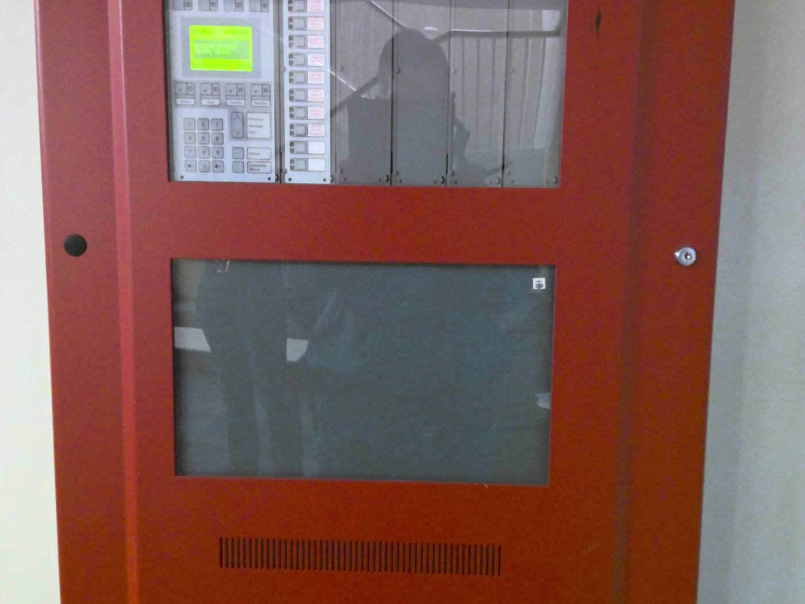
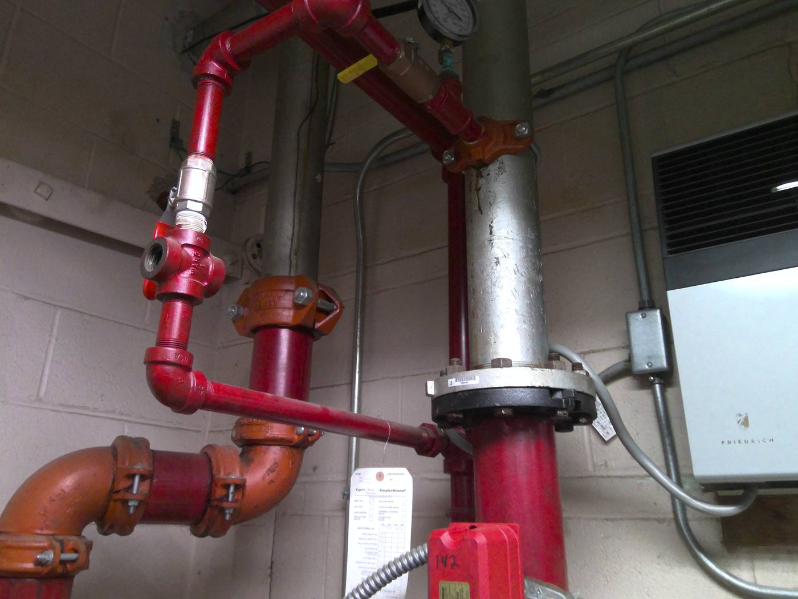
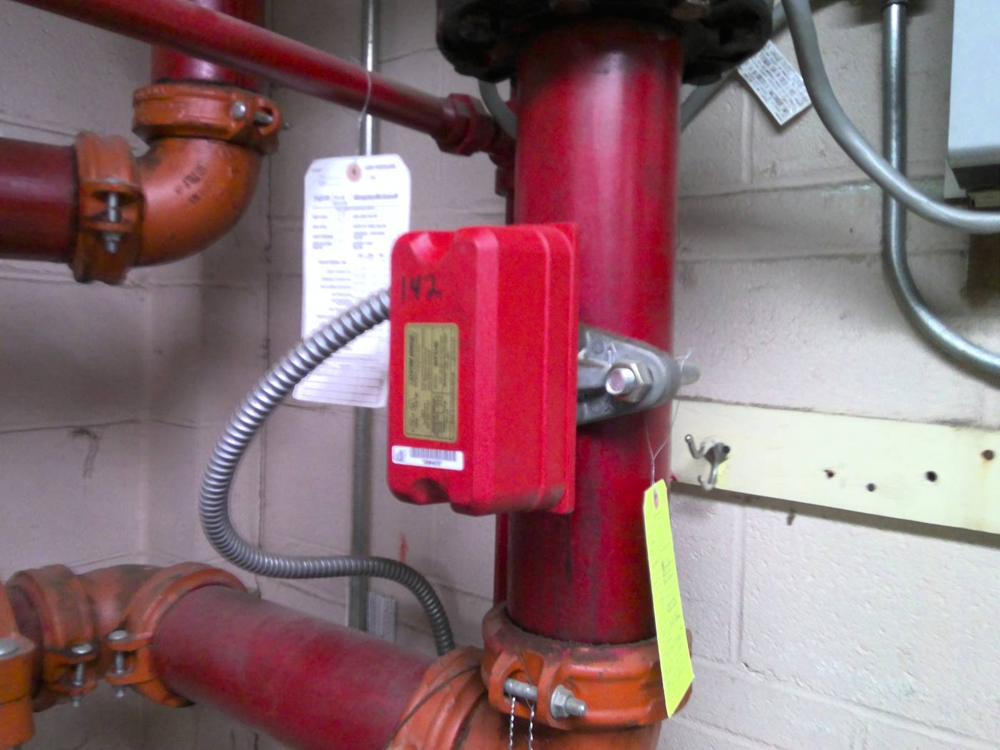

The scope
Alares delivered the full A/E design for fire alarm upgrades across 27 buildings, designed to Chapter 260 of the VA Design Guide and Space Criteria. Notification devices were upgraded to speaker strobes in all locations, every signaling device was replaced to meet current NFPA and VA standards, additional devices were added where code required, panels were upgraded to addressable systems, and the fiber and copper connections serving the existing systems were rebuilt.
On paper that is a device schedule. In practice it is 27 separate buildings with 27 sets of existing conditions, and a hospital that cannot pause while you sort them out.
The challenge
Three things made this harder than a typical fire alarm package. The site investigations had to happen inside occupied hospital buildings without disrupting operations. Every phase had to satisfy infection control procedures and coordinate with multiple hospital departments. And the as built drawings, as always on a campus this old, did not fully match what was actually in the walls.
How we did it
A systematic investigation protocol
Rather than survey building by building ad hoc, we developed a repeatable investigation protocol: document existing conditions, verify the as built information against them, and identify concealed conditions early. Applied consistently across 27 buildings, that protocol is what made the design accurate instead of optimistic.
The pre construction survey requirement
The most valuable thing in this contract is a single requirement. We required the contractor to submit a pre construction survey report documenting every deviation from the contract drawings before work began. It sounds like paperwork. It is the best defense an owner has against the unforeseen conditions change order, because a contractor cannot claim a surprise they already surveyed and signed off on.
Phasing that protects life safety during construction
You cannot take a hospital's fire alarm offline while you replace it. We coordinated the design phasing to minimize impact on operations and keep life safety compliance intact throughout construction, so each building stayed protected while its system was being replaced.
The outcome
Bedford got a comprehensive, code compliant fire alarm design that improved life safety and operational reliability across the whole campus. Alares brought in New England Engineering for electrical and fire protection engineering and Trophy Point for cost estimating. Construction wrapped in 2025.
The measure of the job is what did not happen: no disrupted operations, and no change orders built on conditions nobody had bothered to look at first.


